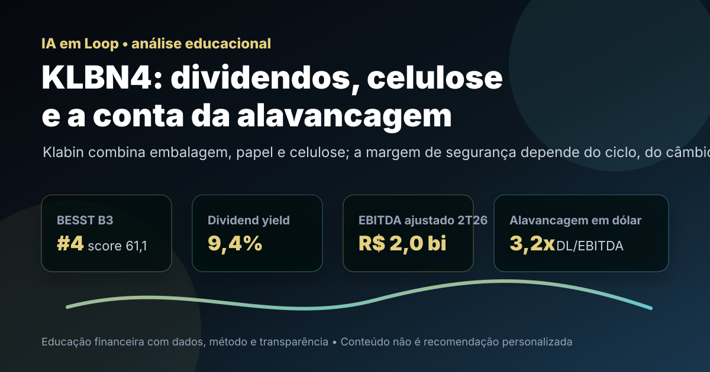

30/09: KLBN4, Klabin e o teste entre dividendos, celulose e dívida
Klabin aparece entre os nomes fortes do ranking BESST Buffett B3. A pergunta central é direta: o dividendo e a integração vertical compensam um negócio exposto a celulose, câmbio, investimento pesado e alavancagem?

Klabin é uma tese de indústria real: ativos florestais, papel, embalagens, celulose e exportação. O preço baixo ajuda, mas a dívida e o ciclo de commodities não podem sair do radar.
Resposta curta: renda interessante, mas dependente de ciclo e desalavancagem
Na base local do ranking BESST Buffett B3, KLBN4 aparece com preço-base de R$ 3,51, valor de mercado de aproximadamente R$ 21,6 bilhões, dividend yield de 9,40%, P/VPA de 0,48, P/L de 43,88, 20 anos listados, 16 anos com dividendos e score 61,1. É uma leitura quantitativa atraente para quem busca renda e ativos produtivos no Brasil, mas não é uma tese simples de múltiplo baixo.
O resultado recente reforça a ambiguidade. A companhia informou receita líquida consolidada de R$ 5,2 bilhões no 2T26, EBITDA ajustado de R$ 2,0 bilhões, margem EBITDA de 38% e alavancagem em dólar de 3,2 vezes dívida líquida/EBITDA. Também houve distribuição de R$ 278 milhões em dividendos no trimestre e anúncio de programa de recompra de até 31,25 milhões de Units. O conjunto é bom, mas exige que caixa, capex e dívida caminhem juntos.
O que favorece KLBN4
O primeiro ponto favorável é a combinação entre base de ativos e recorrência operacional. Klabin atua em florestas, celulose, papéis e embalagens, o que dá mais controle de insumos e permite capturar valor em diferentes partes da cadeia. Em um país com vocação florestal, essa integração é uma vantagem real quando o ciclo de preços não está contra a empresa.
O segundo ponto é a remuneração ao acionista. Além do dividend yield elevado na base local, o comunicado do 2T26 informou dividendos de R$ 278 milhões no trimestre e R$ 1,180 bilhão nos últimos 12 meses. A recompra anunciada também sinaliza disciplina de capital, desde que não concorra com a necessidade de reduzir dívida e financiar manutenção industrial.
| Métrica | Valor | Leitura |
|---|---|---|
| BESST Buffett B3 | #4 / score 61,1 | renda, histórico e preço chamam atenção |
| Dividend yield local | 9,40% | renda forte, dependente de caixa |
| Dividendos 12 meses informados | R$ 1,180 bi | retorno ao acionista relevante |
| Recompra anunciada | até 31,25 mi Units | sinal positivo se a dívida seguir controlada |
| Exposição central | celulose, papel e embalagens | negócio produtivo, mas cíclico |
O que ameaça a tese
O maior risco é tratar Klabin como se fosse renda fixa. A empresa tem ativos resilientes, mas a geração de caixa sofre com preço de celulose, demanda por embalagens, câmbio, custo de insumos, frete, juros e investimento industrial. O próprio 2T26 mostrou receita 2% menor contra o ano anterior, apesar da margem ainda forte.
A alavancagem é o segundo teste. A companhia reduziu a alavancagem em dólar nos últimos 12 meses, mas 3,2 vezes dívida líquida/EBITDA ainda pede atenção. Se o ciclo de celulose piorar ou o capex subir demais, o dividendo pode deixar de ser o principal argumento e a prioridade passa a ser proteger balanço.
KLBN4 é uma tese de renda cíclica: boa para estudar ativos reais, escala industrial e disciplina de capital, mas só melhora se EBITDA, caixa livre e desalavancagem sustentarem os proventos.
Favoráveis e desfavoráveis
Favoráveis
• Integração vertical em florestas, papéis, embalagens e celulose.
• Forte posição no ranking BESST Buffett B3.
• Dividend yield elevado na base local.
• Margem EBITDA de 38% no 2T26.
• Recompra pode aumentar retorno se for feita com disciplina.
Desfavoráveis
• Exposição a celulose, câmbio e demanda global.
• P/L alto na base local indica lucro contábil ainda apertado.
• Alavancagem de 3,2x exige acompanhamento.
• Capex industrial compete com dividendos.
• Receita do 2T26 caiu na comparação anual.
Checklist para acompanhar daqui em diante
| Ponto | O que monitorar | Se piorar |
|---|---|---|
| Alavancagem | dívida líquida/EBITDA em dólar e em reais | dividendos e recompra perdem força |
| EBITDA | margem, preço de celulose e volumes de embalagens | tese vira dependente de ciclo favorável |
| Caixa livre | capex, juros e capital de giro | retorno ao acionista pode ser comprimido |
| Câmbio | real contra dólar e hedge | receita e dívida podem oscilar muito |
| Proventos | payout, dividendos e JCP | yield passado deixa de ser guia confiável |
Conclusão
A resposta para a pergunta do post é: KLBN4 tem renda, ativos e ranking suficientes para merecer acompanhamento, mas a margem de segurança depende de desalavancagem e caixa livre. O dividendo é atraente; a exposição industrial e cambial impede uma leitura automática.
Na régua do IA em Loop, Klabin é uma boa tese para estudar renda cíclica no Brasil. O investidor que olha apenas o yield perde metade do filme; o investidor que acompanha EBITDA, dívida, capex e ciclo de celulose entende melhor quando o desconto vira oportunidade e quando vira armadilha de commodity.